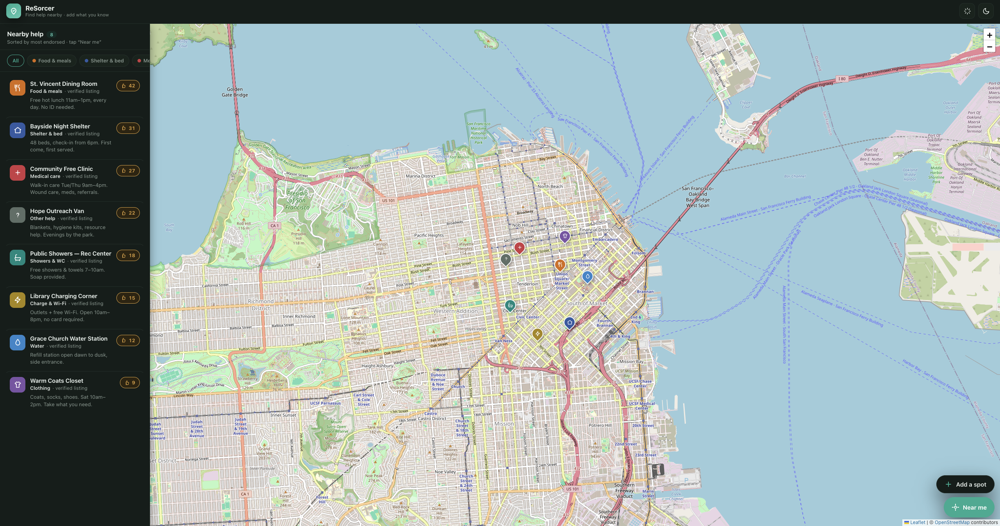
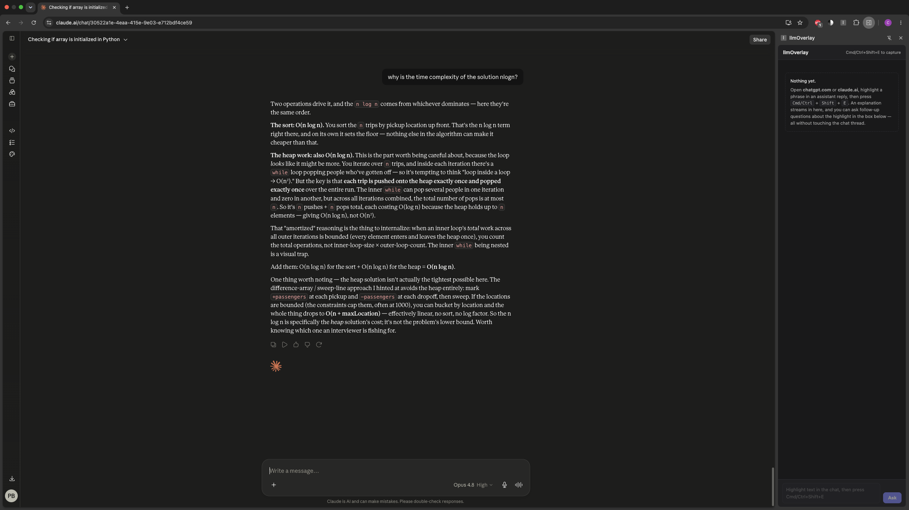
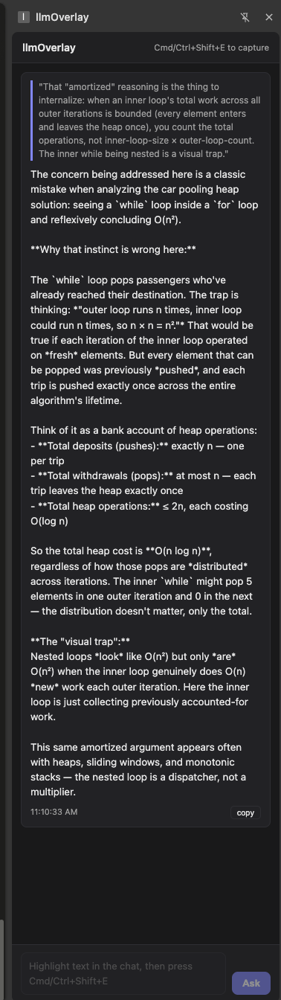
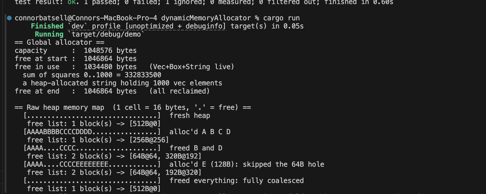
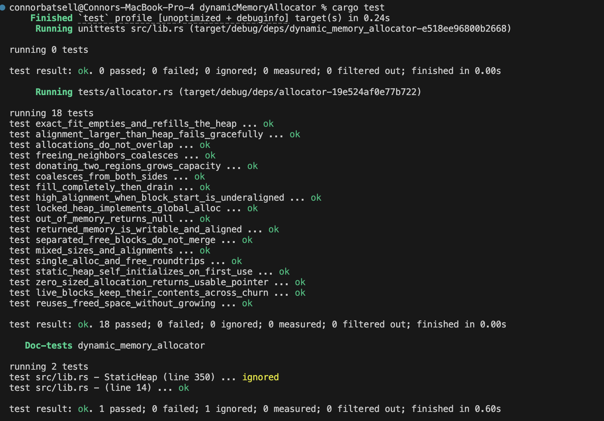
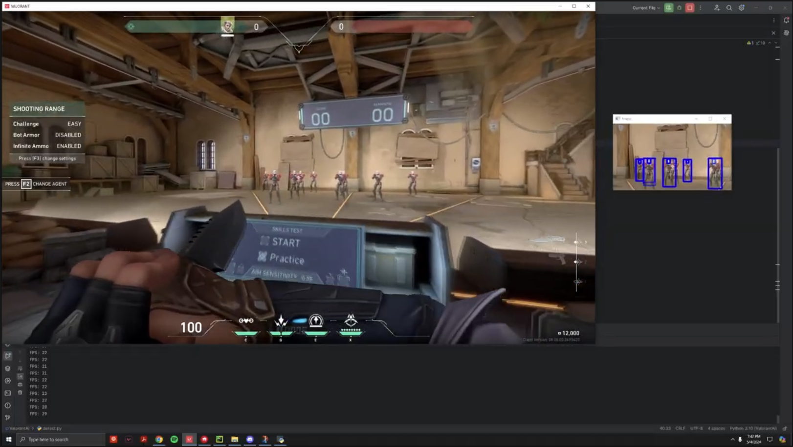

A dependency vulnerability scanner, built for the Ramp Builders Cup, that answers the question a CVE list never does, whether your code actually reaches the vulnerable code path. Point it at a GitHub repository and it resolves the full dependency tree across npm, PyPI, and Maven, checks every package against OSV.dev, then triages each high-severity finding by locating the call sites with ripgrep, slicing out the enclosing functions, and asking an LLM whether the vulnerable API is genuinely invoked, re-verifying every citation the model returns. It also walks the lockfile's git history with a laddered bisect over a blobless partial clone to name the exact commit, author, and PR that introduced each vulnerable version. The whole system holds one safety invariant, that triage may only demote a finding's display priority and never hide it, so low model confidence, a bad citation, or an API timeout all resolve toward more visible rather than less. On OWASP NodeGoat it surfaces 126 vulnerable packages across 1,064 dependencies and then tells you which six actually matter.
A Ramp Builders Cup project that asks whether a company's AI spend is actually paying off. Ramp tracks what AI costs, and Dividend closes the loop on what it is worth, pulling card spend per initiative through a service layer that mirrors the Ramp Developer API and setting paid against consumed against whether the work moves the KPI its owner declared on day one. Each initiative rolls utilization, adoption, and KPI movement into a transparent scale, watch, or kill verdict, and the effectiveness score behind it is computed live rather than stored, with a judge model grading a pre-AI work artifact against a current AI-assisted one on a fixed rubric and a separate novelty check embedding each draft to measure cosine similarity against the brand's published corpus, catching AI output that is heavy on usage but near-duplicate in substance. Built with React, TypeScript, Tailwind, and Recharts on Vite, with every rubric and verdict rule surfaced in the UI.
A community-driven map for finding nearby essential resources, food, shelter, medical care, showers, water, clothing, and charging or Wi-Fi access, where anyone can post a spot and other users endorse it to vouch for its accuracy or flag it when it goes stale. The backend is a Go service built on the Chi router and pgx, backed by PostgreSQL with PostGIS so nearby-spot lookups run as real geographic queries, and it verifies Supabase-issued JWTs to keep discovery open to the public while gating posting, endorsing, and flagging behind authenticated accounts. The API is containerized with Docker and deployed on Fly.io, and a Leaflet front end plots each spot on the map beside a sidebar that ranks nearby help by endorsement count.

A Chrome extension that lets you highlight text inside ChatGPT or Claude replies and get instant explanations in a side panel via a keyboard shortcut, without disrupting the main conversation. It routes between the Anthropic and OpenAI APIs with streamed responses, grounding each explanation in the full chat transcript for context-aware follow-ups. The extension is built with TypeScript, React, and Vite on the Chrome Extensions APIs; API keys live in chrome.storage.local and every call is routed through a background service worker, so content scripts never see secrets.


A from-scratch heap allocator in Rust that plugs into the language as a #[global_allocator] by implementing the GlobalAlloc trait, so ordinary Vec, Box, and String allocations route through it. It manages a fixed static heap with a free list, satisfying requests via first-fit with block splitting and honoring arbitrary power-of-two alignment, then immediately coalesces neighboring free blocks on deallocation to fight fragmentation and reclaim all memory once live objects drop. A Mutex-wrapped heap makes it usable as a thread-safe global allocator, and the project ships a verbose demo that renders the raw heap as a memory map alongside an 18-test suite covering coalescing, alignment edge cases, exact fits, and out-of-memory behavior.


An automated test-case generation tool built on a typed Python object model for primitive and iterable types using generics, inheritance, and abstraction. It runs an end-to-end pipeline that executes reference and buggy implementations through process-level invocation and aggregates failures across versions, then selects a minimal test set with a greedy set-cover algorithm. Recursive AST-based generators and JSON-driven configuration drive the whole process.
A computational model of human memory built for a Rice cognitive sciences course, implementing Baddeley's working memory architecture in Java. A central executive routes incoming experiences into the right subsystem, a phonological loop, a visuospatial sketchpad, or an episodic buffer, each with its own limited capacity and decay rate, then consolidates the strongest traces into long-term memory once they cross an encoding threshold. The brain exposes a simple interface to encode experiences, advance time to simulate forgetting, and prompt for cued recall, so you can watch memories strengthen, fade, or fail to retrieve depending on how they were learned.
A Pacman agent that uses hill-climbing search over a hand-designed evaluation function to choose moves in real time, balancing pellet pursuit, ghost avoidance, and corridor escape. I built the game engine from scratch in Python, including a tile-based map representation, entity update loop, and a node graph for pathfinding and successor generation, then tuned the heuristic weights iteratively against scripted ghost behaviors to compare greedy local search against random and shortest-path baselines.
A YOLOv5 object-detection model trained on labeled Valorant gameplay footage to detect enemy players in real time across multiple maps and agent skins. I built the data pipeline end-to-end, handling frame extraction, bounding-box annotation, augmentation, and training/validation splits, then ran inference on live screen captures to overlay detection boxes on the game feed for performance evaluation.
